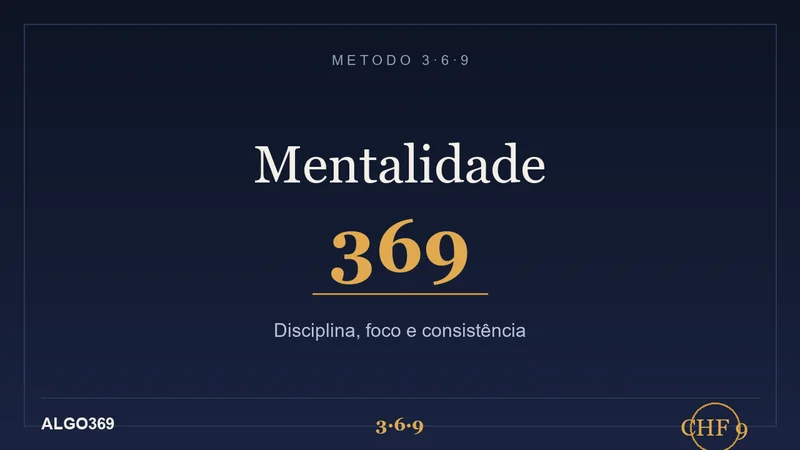
Comece por aquiGuia “Mentalidade 369”
O método em três ritmos (o dia, a semana, o ciclo), as quatro armadilhas e uma página para pendurar na parede.
PDF · 6 páginasCHF 9Comprar
Escrevemos sobre casa, bem-estar e as pequenas escolhas que fazemos todos os dias.
Só recomendamos o que já usamos ou o que conseguimos justificar. Quando não sabemos, dizemos que não sabemos.
Aqui só está o que existe e pode ser comprado agora. Quando houver mais, vai aparecer — não antes. Os guias em PDF estão escritos em português de Portugal.

Comece por aquiO método em três ritmos (o dia, a semana, o ciclo), as quatro armadilhas e uma página para pendurar na parede.
PDF · 6 páginas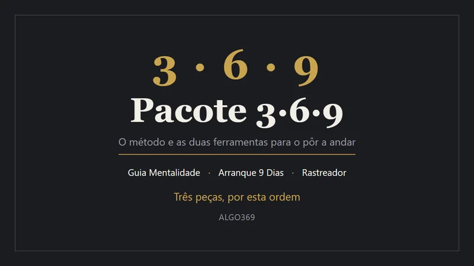
3 por CHF 15O Guia, o Arranque 9 Dias e o Rastreador em um só arquivo, com um guia de leitura.
PDF · 24 páginas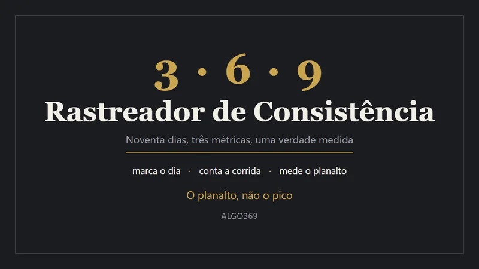
Três métricas, 90 dias, um X por dia. Celebra a sequência que não se quebra, não o dia heroico.
PDF · 8 páginas (A4 e A5)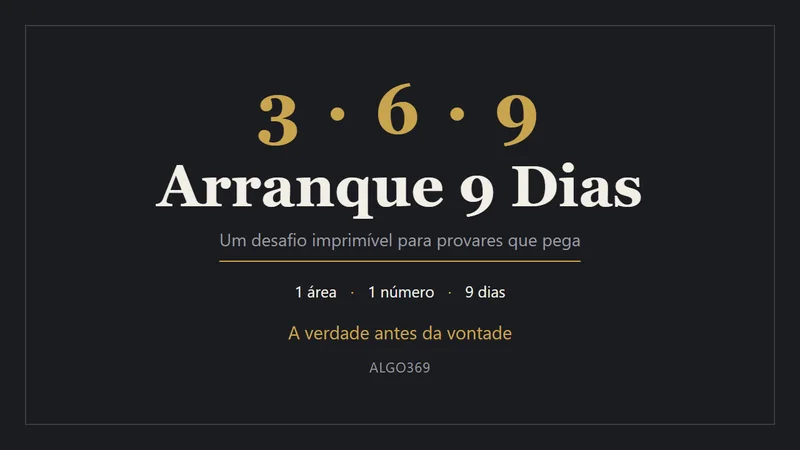
Um desafio para imprimir: uma área, um número, nove dias. No final, uma única pergunta: o número mudou?
PDF · 8 páginas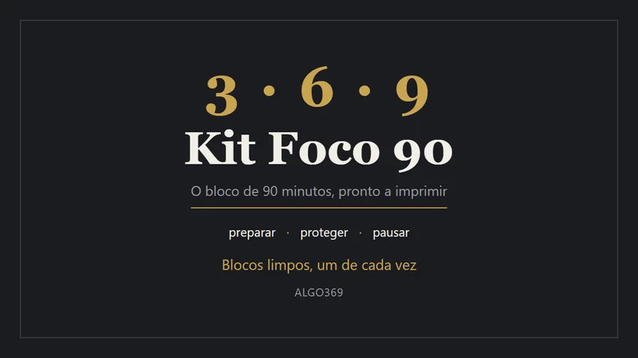
O bloco de 90 minutos pronto para imprimir: cartões para a porta, checklist, ritual de encerramento do dia e folha de registro.
PDF · 7 páginas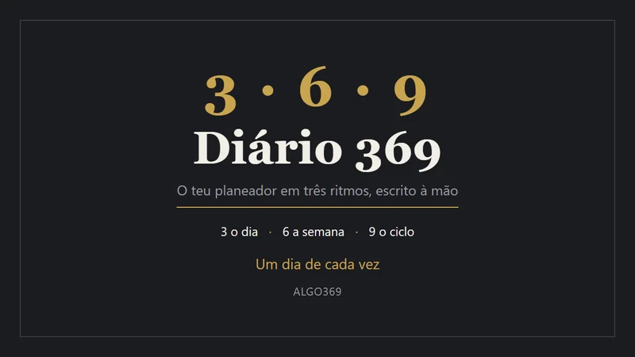
Um planner para escrever à mão, com páginas para o dia, a semana e o ciclo de nove semanas.
PDF · 7 páginas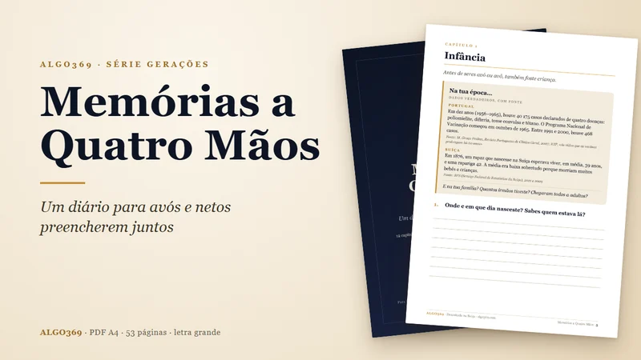
NovoUm diário para avós e netos preencherem juntos: 87 perguntas em 12 capítulos e quadros “Na tua época…” com dados verdadeiros do mundo, de antes e de agora, sempre com a fonte, e espaço para vocês escreverem os dados da sua terra.
PDF · 53 páginas · letra grande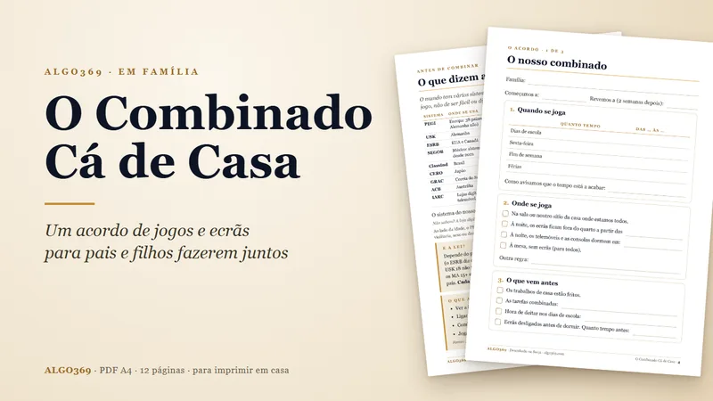
NovoUm acordo sobre jogos e telas para pais e filhos fazerem juntos: quando, onde e o que se joga, 2 semanas para testar e uma revisão no final. Com os sistemas de classificação etária do mundo lado a lado (PEGI, USK, ESRB, ClassInd, CERO e outros), sempre com a fonte.
PDF · 12 páginas A4 · filhos de 8 a 16 anos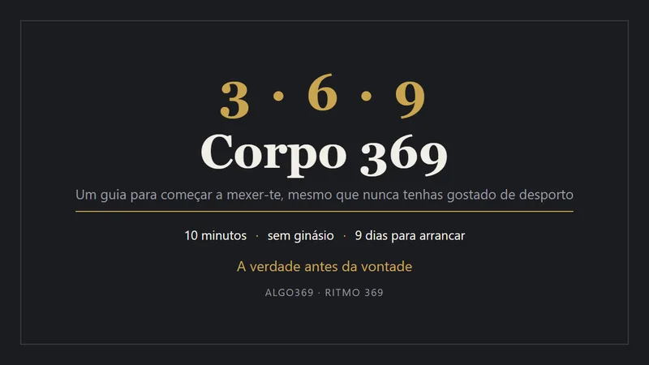
NovoPara quem não pratica esporte ou parou. 10 minutos por dia, sem academia: um começo de 9 dias e um plano de 9 semanas, com folhas para imprimir.
PDF · 15 páginas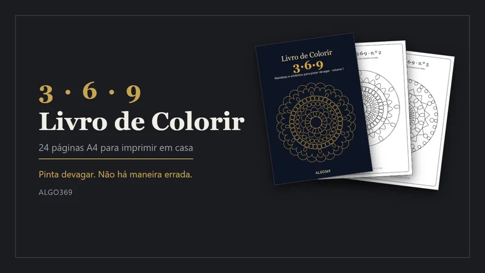
22 desenhos originais para imprimir: 14 mandalas com simetria de 3, 6 ou 9 e 8 símbolos simples. Pinte devagar.
PDF · 24 páginas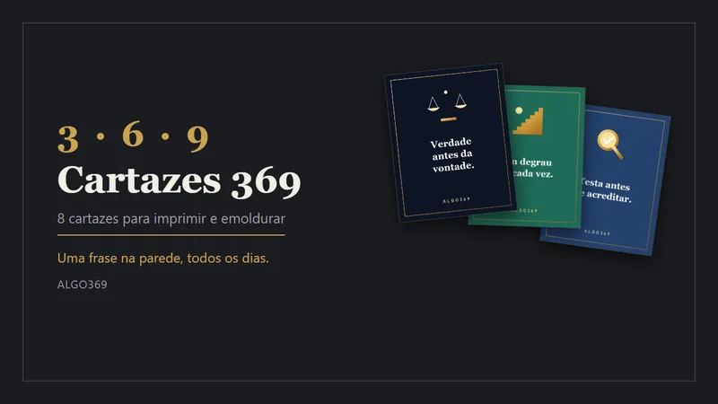
8 cartazes, cada um com um símbolo e uma frase curta, em alta resolução para imprimir e emoldurar (20 × 25 cm ou A4).
PDF · 8 páginas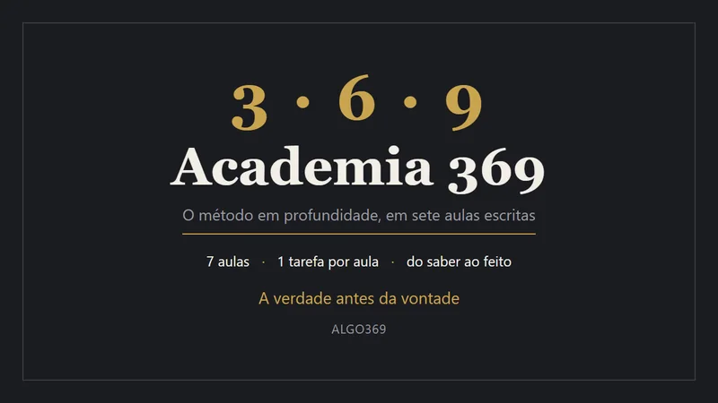
O método completoSete aulas escritas, cada uma com uma tarefa que deixa algo pronto. Não são vídeos.
PDF · 14 páginasVocê tem um EA (MetaTrader) e quer saber se ele é real ou se só parece bom no backtest? Testamos o EA de verdade e contamos para você o que encontramos, sem prometer lucros nem vender sinais.
Relatório escritoO pagamento é feito na página segura do Gumroad, que abre em uma nova janela. Produtos digitais: você recebe o arquivo logo depois da compra.
Textos longos, sem pressa, sobre coisas que vale a pena entender bem de uma vez.
Quase todo mundo que compra uma monstera faz a mesma pergunta depois de alguns meses: por que as folhas novas vêm inteiras? A resposta diz muito sobre a planta — e sobre o lugar onde você a colocou.
Esses recortes se chamam fenestrações e não são defeito nem doença. Há duas explicações aceitas, e as duas vêm do lugar de origem da planta: o chão úmido e sombrio das florestas tropicais do sul do México, da Guatemala e do Panamá. Lá, a monstera não é planta de vaso — é uma trepadeira que se agarra aos troncos e sobe em busca de luz, podendo passar dos vinte metros.
A primeira explicação é a luz. Em uma folha enorme e inteira, tudo o que está embaixo fica no escuro. Os buracos deixam a luz passar para as folhas de baixo da própria planta. A segunda é o vento e a chuva: uma folha cheia de aberturas deixa um temporal tropical passar sem se rasgar.
Daí vem a parte prática. Se a sua monstera está fazendo folhas pequenas e fechadas, quase sempre é uma de duas coisas: pouca luz ou nada em que subir. Um tutor de musgo muda mais o aspecto da planta do que qualquer adubo.
E as raízes aéreas que saem do caule não são problema nem sujeira — é assim que ela se agarra às árvores. Você pode guiá-las para a terra do vaso.
Sobre o nome: Monstera vem do latim monstrum, pelo tamanho quase monstruoso das folhas. Deliciosa se refere ao fruto, que é comestível e tem gosto de uma mistura de abacaxi com banana — mas só quando está completamente maduro. Verde, ele irrita a boca por causa dos cristais de oxalato de cálcio. Na prática, dentro de casa, ela quase nunca dá fruto.
Quem começa a aprender tarô costuma fazer a mesma coisa: comprar o baralho e tentar decorar 78 significados. É o caminho mais lento que existe — e o mais desanimador.
Existe um atalho, e ele está desenhado dentro das próprias cartas. Quando Pamela Colman Smith ilustrou o baralho Rider-Waite em 1909, colocou em cada carta uma cena completa: personagens, objetos, clima, direção do olhar. A cena conta a história. O significado é a leitura da cena, não uma lista à parte.
O método é olhar sempre na mesma ordem, antes de abrir qualquer livro:
Quem está na carta — uma pessoa, duas, nenhuma? De pé, sentada, deitada?
Para onde olha — para a frente, para trás, para baixo? Quem olha para trás está preso ao passado.
O que tem nas mãos — e o que está no chão, esquecido.
Como está o céu — limpo, nublado, noite, tempestade. O clima é o estado de espírito.
Para onde a cena leva o seu olhar — sempre há um caminho, uma porta, um horizonte.
Um exemplo que costuma convencer. O Diabo mostra duas figuras acorrentadas a um pedestal. Parece uma carta pesada — até você reparar em um detalhe: as correntes no pescoço estão frouxas. Dava para tirá-las pela cabeça. As figuras poderiam sair e não saem.
Não é preciso decorar nada para entender o que isso quer dizer sobre um hábito, um medo ou um relacionamento. A carta não julga: mostra a corrente e deixa a pergunta.
Um último conselho para quem está começando: leia todas as cartas na posição normal nos primeiros meses. As cartas invertidas dobram o que você precisa saber e confundem mais do que ajudam. Quando os 22 Arcanos Maiores já forem familiares para você, acrescente as invertidas.
É uma das plantas mais vendidas do mundo e uma das que mais morrem dentro de casa — quase sempre pelo mesmo motivo, e é o contrário do que se pensa.
O aloe vera — no Brasil, a babosa — é originário da Península Arábica, de terrenos secos e pedregosos. É cultivado há tanto tempo que quase não é mais encontrado em estado realmente selvagem: viajou com as pessoas durante milhares de anos. Aparece em tabuletas sumérias de argila de cerca de 2100 a.C. e no papiro egípcio de Ebers, de cerca de 1550 a.C., que descreve preparações medicinais.
As folhas carnudas são um reservatório. Por dentro, têm um gel feito quase só de água — é assim que a planta sobrevive a meses sem chuva. Esse mesmo gel é o que se usa há séculos para acalmar queimaduras de sol e pequenas irritações da pele.
O erro comum é tratá-la como as outras plantas da casa: regar uma vez por semana, terra boa e rica, vaso sem furo. Em três meses as folhas ficam moles e translúcidas — não é sede, é o oposto. As raízes apodreceram.
Uma dica prática que pouca gente conhece: logo abaixo da casca verde há uma camada amarela chamada látex ou aloína, de sabor muito amargo. É o gel transparente do centro que se usa na pele, não essa camada.
E sobre a lenda de que Cleópatra usava aloe — é isso mesmo, lenda. Não é fato documentado. Mas mostra há quanto tempo essa planta tem fama.
É o número que aparece na caixa em letras grandes e é o que quase todo mundo compara. Também é o número que menos importa.
Watts é consumo, não sucção. Mede a eletricidade que o aparelho gasta, não o trabalho que ele faz com ela. Um motor de 1200 W mal projetado pode aspirar pior do que um de 500 W bem projetado — a diferença vira calor e barulho.
Isso deixou de ser teoria em 2017. O regulamento europeu 666/2013 passou a limitar os aspiradores domésticos a 900 W. Muita gente achou que os aspiradores iam ficar fracos; não ficaram. Os fabricantes foram obrigados a melhorar o projeto em vez de aumentar o motor.
Os números que vale a pena procurar são outros:
Air watts (AW) — mede a potência de sucção na saída, já descontada a perda do tubo e do bocal. É o mais próximo do que você sente ao aspirar. Nos bons modelos sem fio, fica entre 100 e 250 AW.
Pascal (Pa) ou kPa — mede o vácuo (pressão negativa) que o motor consegue criar. Útil para comparar, mas sozinho não basta: muito vácuo com pouca vazão de ar levanta a poeira fina e deixa o resto.
Vazão de ar (litros por segundo) — é o que arrasta a sujeira maior.
A sucção só funciona se o ar tiver por onde passar. Um saco meio cheio, um filtro sujo ou um tubo entupido derrubam o desempenho de qualquer aparelho, por mais caro que seja. Limpar o filtro faz mais diferença do que trocar de aspirador — e é a manutenção que quase ninguém faz.
Uma observação sobre a comparação entre com fio e sem fio: os modelos sem fio modernos ganham em praticidade e perdem em autonomia no modo forte. Se a casa é grande, o número que importa não é a sucção máxima — é quantos minutos ele aguenta nesse modo. Costuma ser bem menos do que o anunciado, porque o anunciado vale para o modo mais fraco.
“HEPA” virou selo de qualidade e aparece em coisas que não têm nada a ver umas com as outras. Vale a pena saber o que a palavra significa, porque o significado é preciso.
Um filtro HEPA de verdade retém 99,97% das partículas de 0,3 micrômetro. Esse número não foi escolhido ao acaso e tem uma explicação que surpreende quase todo mundo.
Parece contraditório, mas não é. As partículas grandes batem nas fibras e ficam presas. As muito pequenas se movem de forma errática (movimento browniano) e acabam colidindo também. As de 0,3 µm são as que melhor escapam dos dois efeitos — por isso é nesse tamanho que se mede o pior caso. Um filtro que captura 99,97% no pior caso captura mais do que isso em todo o resto.
Duas armadilhas na hora de comprar:
“Tipo HEPA” ou “estilo HEPA” não é HEPA. São expressões sem definição legal e podem aparecer em um filtro que retém 85%. A palavra que importa vem acompanhada de uma norma — na Europa, a EN 1822, com classes de H13 para cima.
O filtro não é o aparelho. Um bom filtro em um purificador que mal movimenta o ar limpa pouco. O número que conta é o CADR (Clean Air Delivery Rate), em metros cúbicos por hora: ele diz quanto ar limpo o aparelho entrega de fato. Uma sala de 20 m² com pé-direito normal precisa de bem mais CADR do que a caixa costuma sugerir.
E o que um HEPA não faz: não remove gases nem cheiros. As partículas da fumaça ficam no filtro, mas o cheiro da fumaça, os compostos orgânicos voláteis e o cheiro de tinta fresca são gases, não partículas. Para isso é preciso carvão ativado, que é outro filtro e se desgasta mais rápido.
Se você tem alergia, a diferença é sentida principalmente no quarto e à noite. Um aparelho bom no lugar certo vale mais do que um aparelho enorme na sala.
Há plantas que morrem por falta de atenção. A lavanda morre do contrário — e é por isso que tanta gente desiste depois do primeiro vaso.
Ela cresce naturalmente nas encostas secas e calcárias do Mediterrâneo ocidental: a Provença, a Catalunha, os montes da Itália. Terra pobre, muita pedra, sol batendo o dia todo. Os campos roxos das fotos são cultivados, mas a planta é mesmo de lá.
Isso define todo o resto. Terra rica e úmida mata a lavanda. O que costuma acontecer é o seguinte: a pessoa compra a lavanda, planta em terra boa e escura comprada em saco, rega duas vezes por semana como as outras — e depois de dois meses ela fica cinza no meio e nunca mais se recupera. Não foi sede, foi raiz apodrecida.
Sobre o perfume: ele vem de óleos essenciais guardados em pelos minúsculos na superfície das folhas e das flores. Para a planta, não são perfume nenhum — são defesa contra insetos e contra o calor. Ao esfregar as folhas entre os dedos, esses pelos se rompem, e é por isso que o cheiro fica nas mãos.
O nome também diz o uso: lavanda vem do latim lavare, lavar. Os romanos a colocavam na água do banho e na lavagem de roupa. O gesto ficou no nome até hoje.
Uma coisa prática que muda o aspecto da planta depois de alguns anos: podar depois da floração, sem chegar aos galhos velhos e lenhosos. Sem essa poda, a lavanda fica lenhosa embaixo e desengonçada, e aí não tem mais volta.
E se você tiver varanda: uma única planta muda a quantidade de abelhas que aparecem. O mel de lavanda tem sabor próprio por causa disso.
A maior parte das plantas de dentro de casa que morrem não morre de sede. Morre de excesso de rega — e quase sempre porque alguém decidiu regar “toda quarta-feira”.
O problema do calendário é que a planta não vive em um calendário. A mesma planta bebe muito mais no verão, com a janela aberta, do que no inverno, com aquecimento e dias curtos. Regar sempre igual é acertar metade do ano e errar a outra metade.
É simples e funciona para a maioria das plantas de casa. Duas variações que vale a pena conhecer:
Suculentas, babosa e cactos — espere a terra secar toda, não só na superfície. No inverno, podem passar semanas sem água.
Samambaias e plantas de folha fina — querem a terra sempre levemente úmida, mas nunca encharcada.
Como reconhecer o excesso: folhas amarelas e moles, terra com cheiro de mofo, mosquinhas voando em volta do vaso. Como reconhecer a falta: folhas murchas, mas ainda firmes, terra que se solta das paredes do vaso.
A confusão entre os dois é comum porque as folhas caem nos dois casos. A diferença está no toque: murcha e mole é água demais; murcha e seca é água de menos.
E o mais importante de tudo, que não tem nada a ver com rega: o vaso precisa ter furo. Um vaso decorativo sem drenagem transforma qualquer rega correta em água parada nas raízes. Se você gosta do vaso, use-o como cachepô — a planta fica lá dentro, no vaso de plástico com furos.
Nós as escrevemos aqui para que possam nos cobrar por elas.
Não dizemos que uma coisa vai mudar a sua vida. Descrevemos o que ela é, para que serve e onde falha.
Se não testamos, escrevemos que não testamos. Se é lenda e não fato, deixamos claro que é lenda.
Se um dia ganharmos comissão por um link, isso fica escrito na própria página, em português simples.
Não publicamos códigos de desconto, contagens regressivas nem ofertas que expiram. Isso vende; não informa.
Sugestões de temas, correções ou propostas — respondemos a tudo o que for escrito por uma pessoa.